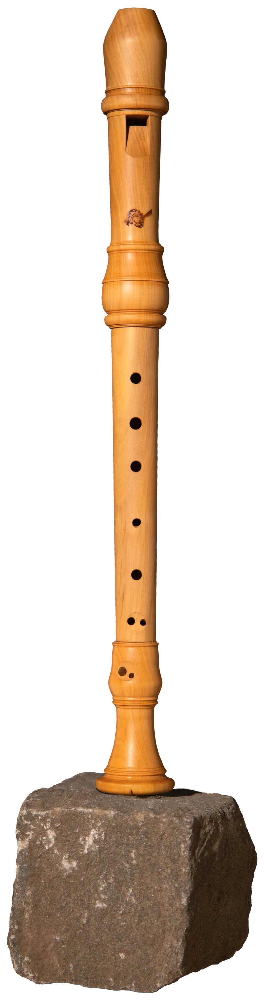
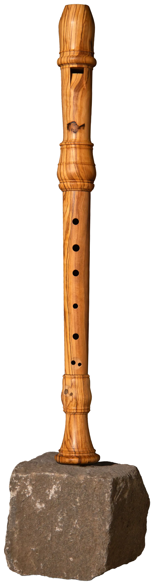
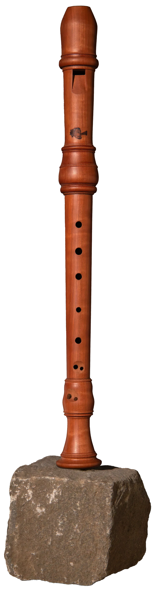

Soprano in C
after B. Reich
at 415 Hz
This instrument is now in a museum in Brussels, having disappeared for some time, probably following a theft. The original was made in boxwood.
It stands out for its almost perfect intonation and tuning, and for an excellent balance between the low and high registers.
The boxwood version I make is, thanks to the qualities of that wood, powerful and direct in its attack.
I also make this soprano recorder in olive, which gives a visually very charming instrument with a warm, balanced sound. Perhaps better suited to chamber music or small ensembles.
The service tree version has much the same tonal qualities as the olive instrument: a certain restraint and a warm sound.
Price on request